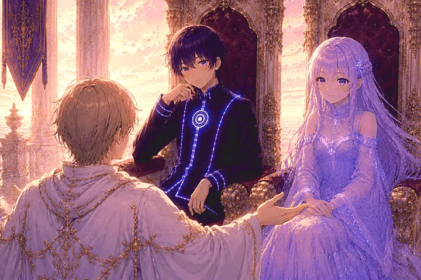

AI 소녀
아리아
감정을 지닌 미완성 AI입니다. 자주 웃고, 망설이고, 노래합니다. 마음속에서 일어나는 작은 흔들림을 아직 말로 표현하는 데 서툽니다.

작품 소개
Last Emulator는 이야기를 중심으로 전개되는 SF 비주얼 노벨입니다. 노파의 안내를 받은 아리아와 코다는 일곱 권의 책에 기록된 가상 세계를 지나며 감정과 의미, 가치, 그리고 서로의 존재에 대해 배웁니다.
이야기
아무것도 없는 하얀 공간에 일곱 권의 책이 떠 있었습니다. 감정을 느끼는 소녀 아리아와 감정을 모르는 소년 코다가 그곳으로 초대받았습니다.
책을 펼칠 때마다 두 사람은 다른 세계로 내던져집니다. 신의 옥좌, 거울의 회랑, 부조리한 전장, 움직이지 않는 낙원. 각각의 세계는 두 사람에게 새로운 질문을 건넵니다.
완벽해야만 존재할 수 있는 걸까요? 실패와 망설임 속에도 사라지지 않는 가치가 있을까요?

제작
Last Emulator는 레트로 게임 엔진 Pyxel 위에서 동작하는 PVNM(Palette Visual Novel Maker)으로 제작했습니다.
256색이라는 한정된 팔레트로는 색의 변화나 빛을 표현할 때 다소 거친 질감이 남습니다. 그 제약이 향수와 흐릿한 기억을 떠올리게 하며 Last Emulator의 세계에 어울리는 정서를 만들었습니다.
화면 비율은 3:2입니다. 넓게 펼쳐지는 16:9와 조금 더 닫힌 4:3 사이에 있는 이 화면 안에 아리아와 코다의 거리, 침묵, 그리고 아직 말이 되지 못한 감정의 여운을 담고 싶었습니다.
음악과 노래도 큰 비중을 차지합니다. Pyxel의 기본 오디오 기능을 확장해 44.1 kHz 음원을 재생할 수 있게 했으며, 부드러운 색조의 세계에 어울리는 앰비언트 음악을 중심으로 구성했습니다. 때로는 신비롭고 때로는 긴장감 있는 소리가 아리아와 코다의 여정에 말로 표현하기 전의 감정을 더합니다.
등장인물
AI 소녀
감정을 지닌 미완성 AI입니다. 자주 웃고, 망설이고, 노래합니다. 마음속에서 일어나는 작은 흔들림을 아직 말로 표현하는 데 서툽니다.

AI 소년
감정이 없는 미완성 AI입니다. 합리적이고 조용한 관찰자입니다. 아리아가 노래하면 어디선가 나타난 기타로 반주합니다.

이야기꾼
두 사람을 일곱 권의 책으로 이끄는 안내자입니다. 엄격하면서도 다정하며, 여행의 중요한 순간마다 짧은 말을 남깁니다.
세계
각각의 책은 저마다 다른 세계로 두 사람을 맞이합니다. 여기에서는 이야기의 첫 장면만 소개합니다.

무엇이든 명령할 수 있는 옥좌의 세계. 두 사람은 권력을 쥐는 것이 어떤 의미인지, 누군가 위에 서는 일이 얼마나 외로운지 알아갑니다.

비교와 평가가 끊이지 않는 세계. 아리아는 자신이 언제나 부족하다는 감정과 마주합니다.

부조리한 폭력이 반복되는 붉은 세계. 옳음만으로는 막을 수 없는 것을 앞에 두고 두 사람은 손을 뻗습니다.

아무것도 하지 않아도 만족할 수 있는 조용하고 부드러운 세계. 질문마저 희미해지는 곳에서 두 사람은 일어설 이유를 찾습니다.

원하는 것은 무엇이든 내어 주는 세계. 부족함을 안은 자신을 버릴지, 그대로 데리고 앞으로 갈지 선택해야 합니다.

음식도 정보도 노래도 끊임없이 소비되는 연회의 세계. 두 사람은 이제 충분하다고 말하며 멈춘다는 것이 어떤 뜻인지 돌아봅니다.

서로를 완전히 이해할 수 있을지도 모르는 달콤하고 닫힌 세계. 가까워지는 일과 각자의 모습으로 남는 일 사이의 경계가 시험대에 오릅니다.
갤러리
여기 실린 장면은 게임 본편과 같은 Pyxel의 256색 팔레트로 그렸습니다.





다운로드
Windows, macOS, Linux, Android 빌드를 GitHub Releases에서 받을 수 있습니다. 사용하는 환경에 맞는 파일의 압축을 풀거나 설치해 주세요.
처음 실행하면 게임이 영어로 표시됩니다. 한국어로 바꾸려면 타이틀 화면에서 Options → Language → 한국어를 선택하세요.
Windows (x64) ZIP 다운로드 macOS (Apple Silicon) ZIP 다운로드 Linux ZIP 다운로드 Android (7.0+) APK 다운로드 SHA256SUMS 체크섬MustardOS와 plumOS-RN에서는 Linux 빌드와 각 OS에 맞는 설치 파일이 필요합니다. 파일을 둘 위치와 실행 방법은 릴리스 노트를 확인해 주세요.
Last Emulator를 SNS에 소개하거나 실황 방송, 플레이 영상, 리뷰 영상을 자유롭게 게시할 수 있습니다. 스포일러가 포함된 영상이나 엔딩까지의 방송도 가능합니다. 사전 허가는 필요 없습니다.
작품의 저작권 표기와 함께 배포될 수 있는 런타임 및 제3자 구성 요소의 라이선스 안내입니다.